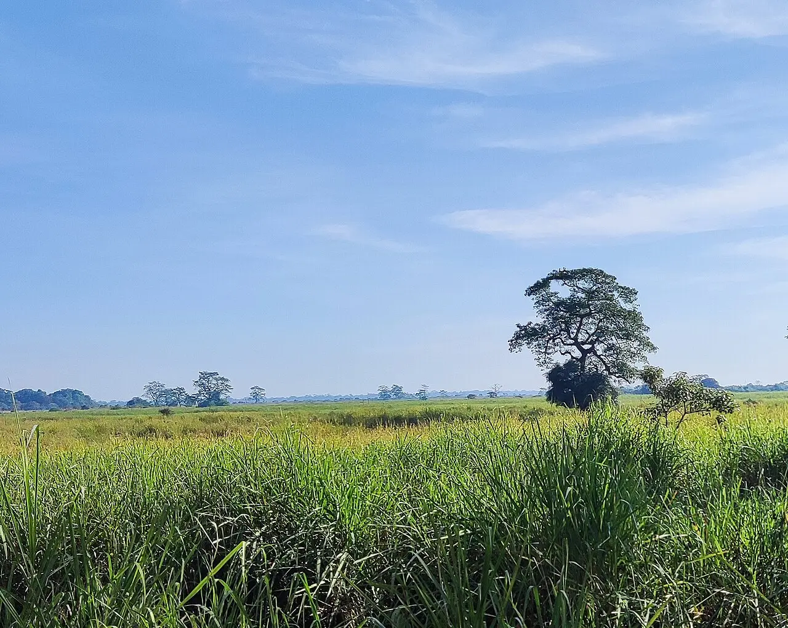

12 stories, each with its photo, the official position and its sources.

File photo · 2023 · Grassland in Kaziranga National Park, Assam, near the hotel site Doley protested against, in 2023. Photo: Shyamal / Wikimedia Commons, CC0 (resized)
Right upheldGauhati High Court · Kaziranga, Golaghat, Assam
Court quashes NSA detention of Kaziranga activist
The Gauhati High Court quashed land-rights activist Pranab Doley's NSA detention, saying it rested on "stale" cases. Assam had cited foreign visits and funds; no government reply to the ruling was reported.
File photo · 2014 · Jama Masjid in Srinagar's old city, where the Mirwaiz usually gives the Friday sermon, in 2014. Photo: Mike Prince / Wikimedia Commons, CC BY 2.0 (resized)
SpeechJama Masjid, Srinagar, Jammu and Kashmir
Mirwaiz kept home, barred from Friday sermon
Mirwaiz Umar Farooq said he was under house detention for a sixth day and barred from leading Friday prayers, after a sermon on political prisoners. No police or official statement was reported.
X told the Delhi High Court an imposter, not Delhi Police, sent notices to remove IFF and SFLC accounts; the accounts stay and the case was closed. Police did not comment on record.
A Kuki-Zo body's shutdown over the killing of two Kuki civilians closed Kangpokpi for a fourth day and was extended 48 hours. Police say extra forces are deployed; no state reply was reported.
A Bihar STF and Patna Police team shot dead three men wanted over an October shooting, in Sherpur village. Police say they fired in self-defence after being shot at.
Sugarcane farmers suspended their agitation after factories offered ₹3,600 a tonne and profit-sharing, but still seek ₹5,500 and a state incentive. No state government reply was reported.
File photo · 2013 · Taiz city, seen from a hillside, in 2013. The market hit on Friday is in al-Waziiya district, in Taiz governorate. Photo: Rod Waddington / Wikimedia Commons, CC BY-SA 2.0 (cropped)
Strikes on a Taiz market killed at least 30 civilians, Houthi health officials said, blaming Saudi air strikes; government forces blamed Houthi missiles. The Saudi-led coalition did not respond.
Lives lostCantine, Beni territory, North Kivu, DR Congo
Village raid kills 33 in Ebola-hit Congo
Attackers killed 33 people and burned a health post in Cantine, local civil society said; 180 patients, including Ebola cases, fled. Local authorities blame the ADF armed group.
UNHCR and IOM said 15.4 million Sudanese need emergency shelter but funds cover about 10%; 936,000 have been helped. "Our warehouses are completely empty," IOM's Sudan chief said.
Tanzania jails opposition leader Lissu for incitement
A court cleared Tundu Lissu of treason but jailed him four years for incitement over his slogan "No Reforms, No Election". He calls it political; Amnesty called it a "travesty of justice".
Ex-lawmaker Au Kam San, 69, got 12½ years for subversion after a closed-door trial. Prosecutors said he worked with "external hostile organisations"; his wife called it "groundless persecution".
AssemblyIbrahimi Mosque, Hebron, occupied West Bank
Hebron's Ibrahimi Mosque closed to Palestinian worshippers
Israeli forces barred Palestinian worshippers and staff from the mosque from Friday afternoon to Saturday night for a Jewish observance. Forces said they expected about 20,000 visitors and deployed hundreds of personnel.

.jpg){kind=link}


.jpg){kind=link}